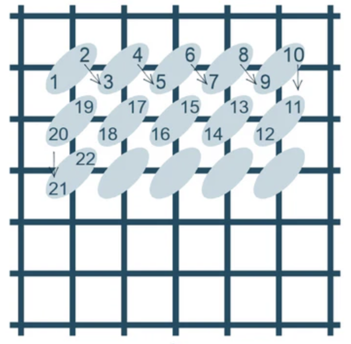
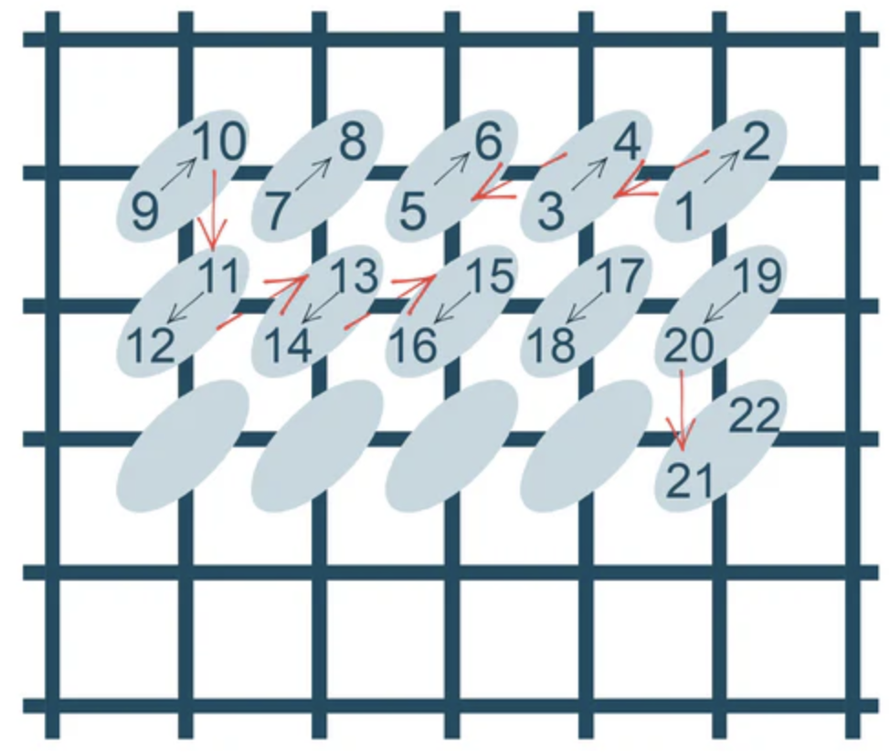
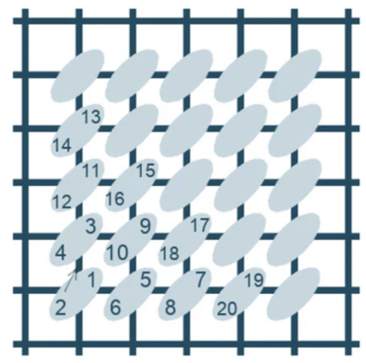

Stitches
Half Cross Stitch
Let's start with the Half Cross stitch. I use this stitch the least of the three. I don't particularly love it because it doesn't offer much coverage on the back of my canvas, which is important for structural longevity. It also is not any easier than the continental stitch. There will be times when I'm switching rows, or dealing with a motif, where I need to do a half stitch, but for the most part I use others.
Continental Half Cross Stitch
Next, we have a hybrid of two tent stitches that what I like to call the Continental Half Cross stitch. Is this a real thing? I'm not sure, but it's what I used to stitch for the first five years of my needlepoint career so we're going with it. It's also what I suggest to people when they are first learning needlepoint, as (I think) it's the easiest stitch.

Continental Stitch
The continental is also my most used because it's super versatile on your canvas. You can go horizontally, vertically, diagonally, work with letters, images, you name it! You can also do this with half cross and the combo continental half cross, but I thought it would be easiest to show you under the umbrella of the continental stitch.
Basketweave Stitch
And then finally, we have basketweave. Out of all the tent stitches, this uses the most amount of thread and provides the most coverage for your canvas. Anything stitched in a basketweave will last you forever. Trust me. Basketweave and continental are the two most popular stitches I've seen people use. Most needlepointers are pretty set in their ways when you ask them which one they prefer. But really it's all about personal preference! What I like about the basketweave is when I'm teaching someone, it's nice that they never have to worry about switching directions. It's diagonal, and the same top right to bottom left motion throughout. Unlike the stitches above, basketweave can only be done in diagonal formations. Which means it's usually best for a larger background area on a canvas
